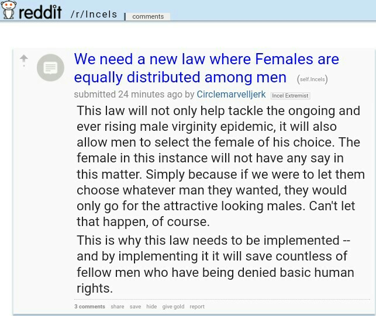

Reddit is one of the most popular websites of the internet; as of April 2018, the website is the 6th most most trafficked website on the internet (Top 500 Sites) globally. It is a place where famous people of all kind go to connect with common folk, from Barack Obama to the late Stephen Hawking and everyone in between. Reddit has also led many protests, the most famous one being for Net Neutrality in the past years. Reddit is a unique website because, like other social media sites, it connects its users through the sharing of content, yet unlike most social media Reddit preserves your anonymity-an amalgam of a forum website and a social media website. Reddit users, known as "redditors," are only identifiable by their username. They have no profile, no picture, and no other way to identify them other than through their history of comments and posts, and conglomerate in "subreddits" specific from topic to topic, of which there are thousands.
While this can provide the ability for healthy debate and transferring of information because it allows for the revealing of opinions without fear of discrimination, the anonymity of the website causes a dangerous breeding ground for echo chambers. One example of such an echo chamber would be the “incel” subreddit. Incel stands for “involuntary celibates,” and the community accrued 40,000 members who practiced extreme misogyny on a daily basis before getting banned by reddit, according to an article written by NY Times journalist Christine Hauser. While the subreddit can no longer be directly accessed, many disturbing posts have been archived by other uses, for instance:

The argument being made here is so impossibly medieval that it can be hard to believe that it is being made unironically. Unfortunately, this is a viewpoint that is so consistent among the incel community that it cannot possibly be a "troll," and that is the issue with Reddit. Reddit's anonymous nature leads to echo chambers where moderators will ban anyone who has an opposing viewpoint; this leads to
extremist subreddits such as incels where their users are so delusional that they believe in a male virginity "epidemic," and the solution is to not only objectify but rape women. The user makes sure to actively mention that "the female in this instance will not have any say in this matter." An article by The Guardian's Olivia Solon reports that "members describe women as “femoids” and the men they have sex with as 'chads,"for example.
Groups such as incels are not only sexist, but exceedingly dangerous to women, as we see in the case of Elliot O'Rodger. Mr O'Rodger was an incel who shot and killed six people in 2014 in California before killing himself. O'Rodger had a youtube page which can still be visited today, in which he had a vlog where he would discuss his loneliness, rejection, and general hatred toward humanity. At one point, he has been quoted as saying
“Start envisioning a world where WOMEN FEAR YOU." The issue doesn't stop with O'Rodgers however, as his fellow incels have embraced his actions, regarding him as "Saint Elliot" (Hauser). The idolization of Elliot O'Rodgers is extremely dangerous for women. Reddit has allowed the incel community to develop into a genuine threat for women, where we now have a group of people who not only actively hate women, but some are clearly willing to commit acts of violence
upon women for not pleasing them.